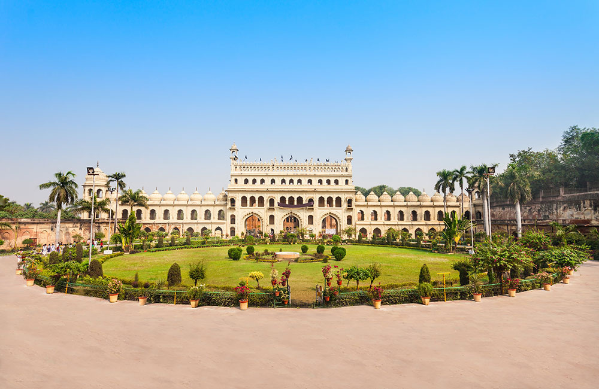
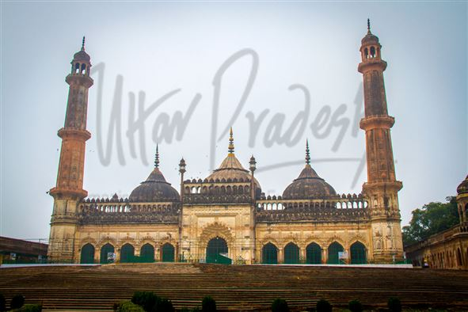
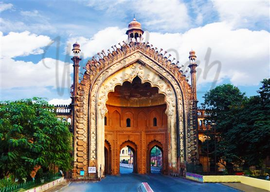
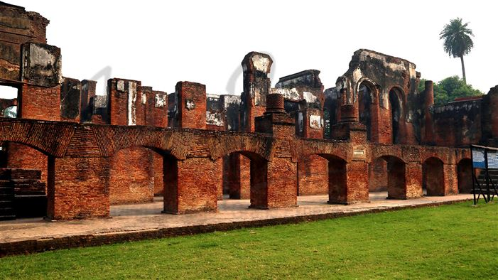

Lucknow is the capital and the largest city of the Indian state of Uttar Pradesh and it is also the second largest urban agglomeration in Uttar Pradesh. Lucknow is the administrative headquarters of the eponymous district and division. Having a population of 2.8 million as per 2011 census, it is the eleventh most populous city and the twelfth-most populous urban agglomeration of India. Lucknow has always been a multizcultural city that flourished as a North Indian cultural and artistic hub, and the seat of power of Nawabs in the 18th and 19th centuries.It continues to be an important centre of governance, administration, education, commerce, aerospace, finance, pharmaceuticals, technology, design, culture, tourism, music and poetry
|  |  |  |  |
|---|
From 1350 onwards, Lucknow and parts of the Awadh region were ruled by the Delhi Sultanate, Sharqi Sultanate, Mughal Empire, Nawabs of Awadh, the British East India Company and the British Raj. For about eighty-four years (from 1394 to 1478), Awadh was part of the Sharqi Sultanate of Jaunpur. Emperor Humayun made it a part of the Mughal Empire around 1555. Emperor Jahangir (1569–1627) granted an estate in Awadh to a favoured nobleman, Sheikh Abdul Rahim, who later built Machchi Bhawan on this estate. It later became the seat of power from where his descendants, the Sheikhzadas, controlled the region. The Nawabs of Lucknow, in reality, the Nawabs of Awadh, acquired the name after the reign of the third Nawab when Lucknow became their capital. The city became North India's cultural capital, and its nawabs, best remembered for their refined and extravagant lifestyles, were patrons of the arts. Under their dominion, music and dance flourished, and construction of numerous monuments took place.Of the monuments standing today, the Bara Imambara, the Chota Imambara, and the Rumi Darwaza are notable examples. One of the Nawab's enduring legacies is the region's syncretic Hindu–Muslim culture that has come to be known as the Ganga-Jamuni Tehzeeb.